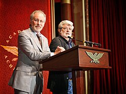
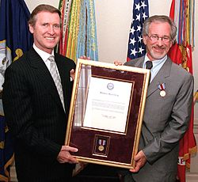

top10-Moives:1. Firelight,2. Duel,3. Something Evil,4. Savage,5. The Sugarland Express,6. Jaws,7. Close Encounters of the Third Kind, 8. 1941,9. Raiders of the Lost Ark,10. E.T. the Extra-Terrestrial.
Schindler's List
Saving Private Ryan
Raiders of the Lost Ark
Steven Allan Spielberg born December 18, 1946 is an American filmmaker. A major figure of the New Hollywood era and pioneer of the modern blockbuster, Spielberg is widely regarded as one of the greatest and most influential filmmakers in the history of cinema and is the highest-grossing film director of all time.[1] Among other accolades, he has received three Academy Awards, four Golden Globe Awards and three BAFTA Awards, as well as the AFI Life Achievement Award in 1995, an honorary knighthood in 2001, the Kennedy Center Honor in 2006, the Cecil B. DeMille Award in 2009, the Presidential Medal of Freedom in 2015, and the National Medal of Arts in 2023. According to Forbes, he is the wealthiest celebrity.[2]
Spielberg returned to science fiction with A.I. Artificial Intelligence (2001), a loose adaptation of Brian Aldiss's short story "Supertoys Last All Summer Long" (1969). Stanley Kubrick had bought the rights to the story in 1979 and worked on an adaptation for years. He told Spielberg about the project in 1984 and suggested that he direct, believing the story was closer to Spielberg's sensibilities. In 1999, Kubrick died. Spielberg decided to direct A.I. and wrote the screenplay himself. Spielberg tried to be faithful to Kubrick's vision and made several allusions to his friend's work though with mixed results according to some critics.
Spielberg cites John Ford as a formative influence: "I try to rent a John Ford film... before I start every movie, simply because he inspires me.... He's like a classic painter, he celebrates the frame, not just what's inside it. " He names Frank Capra's It's A Wonderful Life (1946) as an influence on themes of "family, community and suburbia" . He enjoyed the work of Alfred Hitchcock, David Lean, Stanley Kubrick and John Frankenheimer. In college, he was inspired by foreign films by Ingmar Bergman, Jacques Tati and François Truffaut. Spencer Tracy has also influenced the characters of Spielberg's films, as did The Twilight Zone. He says Lawrence of Arabia is the film he's seen more times than any other.
Spielberg often uses storyboards to visualize sequences, eschewing them for E.T. the Extraterrestrial and The Color Purple for a more spontaneous effect. After filming Jaws, Spielberg learned to save special effects scenes until last and to exclude the media from filming locations.
